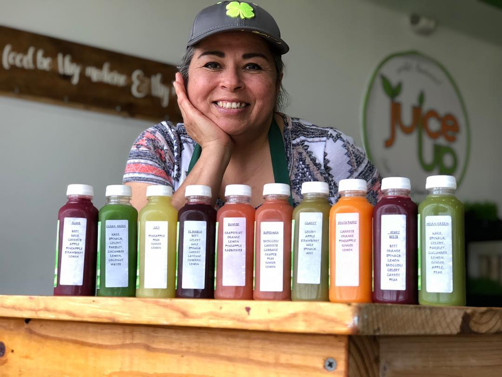

Back many moons ago, I started to realize the effects of the body aging. It does change and if we were not diligent in how we treated our self it shows up on how we feel. So the journey began!
Juice up was started when a young lady got very sick. Doctors poked and prodded but couldn’t really give a solution. They gave the illness a name but still the healing process was very slow. She started to look up food and chose to juice. By her giving her body the nutrients it was yelling for she began to see a big change. As time passed she became much better. With such a change her brother got the brilliant idea and agreed to back and finance a juicing business and so Juice Up was born. Through friends I was introduced to the family and became the manager and now owner. As the story above I to dealt with issues. (due to aging) True to form started to be more diligent in getting my nutrients in thru juicing and inflammation went down, energy sored and much more. To this day we are working hard to keep the real natural bioavailable vitamins and minerals from the plants convenient. We want to change the nutritional culture of the Rio Grande Valley. Spreading the word by attending health fairs, doing presentations at schools, places of employment, and just and individual that comes in to Juice Up looking for a better way to live and feel.
Community plant based pods are being held to reach, teach and share life stories of the conversion process and the how to keeping on a plant based way of eating. Growing food out of your own back yard!! We work with Texas A & M master gardeners (I am also a master gardener) and have sessions to help get individuals started with their own gardens. Being in control of what goes into your food for the seed to table is very gratifying. Keep posted on events thru facebook, Instagram, and snap chat or just come in.
Opening hours: Monday thru Friday 7am to 7pm.
Saturday 7am - 3pm (Closed on Sundays)
Address: 400 N Jackson Rd, Pharr, Tx 78577
FYI! We offer full-service catering for any event, large or small. We understand your needs and we will cater the food to satisfy the biggerst criteria of them all, both look and taste.